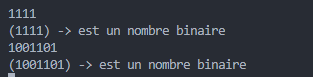
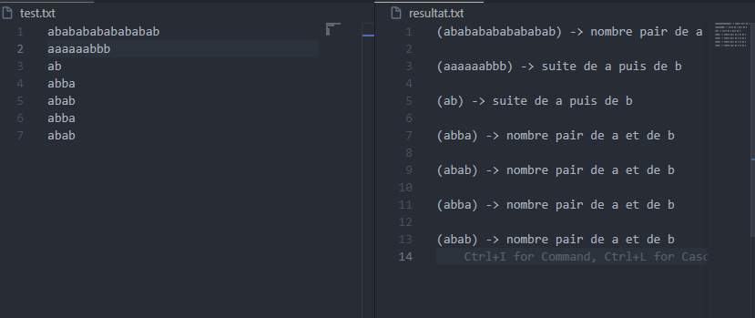
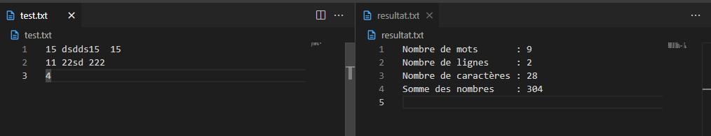

Introduction Générale
Ce rapport présente notre mini-projet de compilation qui consiste en un compilateur pour un langage de programmation simple utilisant des mots-clés en dialecte tunisien. Ce projet s'inscrit dans le cadre de notre cours de compilation et met en pratique les concepts d'analyse lexicale et syntaxique à travers l'utilisation des outils Flex et Bison.
Notre projet est structuré en trois parties principales :
- Des exercices préliminaires d'analyse lexicale avec Flex
- Des exercices d'analyse syntaxique avec Bison
- Le mini-projet de compilateur pour un langage en dialecte tunisien
Ces différentes parties nous ont permis de maîtriser progressivement les outils nécessaires à la réalisation du compilateur final.
Partie 1: Exercices d'Analyse Lexicale avec Flex
Cette première partie regroupe plusieurs exercices d'analyse lexicale réalisés avec l'outil Flex. Ces exercices nous ont permis de nous familiariser avec la reconnaissance de motifs et la génération d'analyseurs lexicaux.
1.1. Validation de Nombres Binaires
Cet analyseur lexical permet de déterminer si une chaîne en entrée est un nombre binaire valide (composé uniquement de 0 et 1) ou non.
Code Source
%{
#include <stdio.h>
FILE *yyin;
%}
%option noyywrap
pairpair (aa|bb)*((ab|ba)(aa|bb)*(ab|ba)(aa|bb)*)*
%%
(0|1)* printf("(%s) -> est un nombre binaire", yytext);
.* printf("(%s) -> est n est pas un nombre binaire \n", yytext);
%%
int main(int argc, char *argv[])
{
++argv, --argc;
if (argc > 0)
yyin = fopen(argv[0], "r");
else
yyin = stdin;
// freopen("resultat.txt", "w", stdout); // Redirection supprimée pour affichage direct
yylex();
return 0;
}Exécution

Figure 1: Résultat de l'exécution du programme de validation de nombres binaires
Explication
L'analyseur utilise une expression régulière simple (0|1)* pour reconnaître les nombres binaires. Si la chaîne est composée uniquement de 0 et de 1, elle est considérée comme un nombre binaire valide. Sinon, elle est rejetée.
1.2. Analyse de Chaînes PairPair
Cet analyseur lexical identifie les chaînes qui contiennent un nombre pair de 'a' et un nombre pair de 'b'.
Code Source
%{
#include <stdio.h>
FILE *yyin;
%}
%option noyywrap
pairpair (aa|bb)*((ab|ba)(aa|bb)*(ab|ba)(aa|bb)*)*
%%
{pairpair} printf("(%s) -> nombre pair de a et de b \n", yytext);
a*b* printf("(%s) -> suite de a puis de b \n", yytext);
%%
int main(int argc, char *argv[])
{
++argv, --argc;
if (argc > 0)
yyin = fopen(argv[0], "r");
else
yyin = stdin;
freopen("resultat.txt", "w", stdout); // Redirection
yylex();
return 0;
}Exécution

Figure 2: Résultat de l'exécution du programme PairPair
Explication
L'analyseur utilise l'expression régulière (aa|bb)*((ab|ba)(aa|bb)*(ab|ba)(aa|bb)*)* pour identifier les chaînes qui contiennent un nombre pair de 'a' et un nombre pair de 'b'. Cette expression garantit que les caractères 'a' et 'b' apparaissent un nombre pair de fois dans la chaîne.
1.3. Analyseur Lexical de Comptage
Cet analyseur lexical permet de compter le nombre de mots, de lignes, de caractères et de calculer la somme des nombres présents dans un fichier texte.
Code Source
%{
#include <stdio.h>
#include <stdlib.h>
int nbMots = 0;
int nbLignes = 0;
int nbCaract = 0;
int somme = 0;
FILE *yyin;
%}
%option noyywrap
%%
[ \t]+ nbCaract += yyleng;
\n { nbLignes++; nbCaract++; }
[0-9]+ { nbMots++; nbCaract += yyleng; somme += atoi(yytext); }
[a-zA-Z]+ { nbMots++; nbCaract += yyleng; }
. nbCaract++;
%%
int main(int argc, char *argv[])
{
++argv; --argc;
if (argc > 0)
yyin = fopen(argv[0], "r");
else
yyin = stdin;
// 🔽 Redirection de sortie vers resultat.txt
freopen("resultat.txt", "w", stdout);
yylex();
printf("Nombre de mots : %d\n", nbMots);
printf("Nombre de lignes : %d\n", nbLignes);
printf("Nombre de caractères : %d\n", nbCaract);
printf("Somme des nombres : %d\n", somme);
return 0;
}Exécution

Figure 3: Résultat de l'exécution du programme Compteur
Explication
L'analyseur utilise différentes règles pour identifier les mots, les lignes et les caractères dans un fichier texte. Il compte également les nombres et calcule leur somme. Les résultats sont redirigés vers un fichier "resultat.txt".
- Les espaces et tabulations sont comptés comme des caractères
- Les retours à la ligne sont comptés comme des caractères et incrémentent le compteur de lignes
- Les nombres sont comptés comme des mots et leur valeur est ajoutée à la somme
- Les séquences de lettres sont comptées comme des mots
Partie 2: Exercices d'Analyse Syntaxique avec Bison
Cette deuxième partie présente des exercices d'analyse syntaxique réalisés avec l'outil Bison. Ces exercices nous ont permis de comprendre comment définir une grammaire formelle et générer un analyseur syntaxique.
2.1. Calculatrice avec Bison
Cet analyseur syntaxique permet d'évaluer des expressions arithmétiques simples.
Fichier Bison (ex1.y)
%{
#include <stdio.h>
#include <stdlib.h>
int yylex(void);
int yyerror(char *s);
%}
%token FIN
%token SOM
%token PROD
%token NB
%token SOUS
%token DIV
%%
liste
: instructions FIN { printf("correct\n"); }
;
instructions
: instruction
| instruction instructions
;
instruction
: SOM listesom '.' { printf("Somme = %d\n", $2); }
| PROD listeprod '.' { printf("Produit = %d\n", $2); }
| SOUS listesous '.' { printf("Soustraction = %d\n", $2); }
| DIV listediv '.' { printf("Division = %d\n", $2); }
;
listesom
: NB { $$ = $1; }
| listesom ',' NB { $$ = $1 + $3; }
;
listeprod
: NB { $$ = $1; }
| listeprod ',' NB { $$ = $1 * $3; }
;
listesous
: NB { $$ = $1; }
| listesous ',' NB { $$ = $1 - $3; }
;
listediv
: NB { $$ = $1; }
| listediv ',' NB { if($3 != 0) $$ = $1 / $3; else { printf("Erreur: division par zéro\n"); exit(EXIT_FAILURE); } }
;
%%
int yyerror(char *s)
{
printf("Erreur : %s\n", s);
return 0;
}
int main()
{
yyparse();
return 0;
}Fichier Flex (ex1.l)
%{
#include <stdio.h>
#include <stdlib.h>
#include "ex1.tab.h"
%}
%option yylineno
%%
[0-9]+ { yylval = atoi(yytext); return NB; }
"somme" { return SOM; }
"produit" { return PROD; }
"soustraction" { return SOUS; }
"division" { return DIV; }
"," { return ','; }
"." { return '.'; }
"[$]" { return FIN; }
[ \t\n]+ { /* Ignorer les espaces et les retours à la ligne */ }
. { if(yytext[0] != EOF) printf("Caractère inconnu : %s\n", yytext); }
%%
int yywrap() {
return 1;
}Explication
Cet analyseur syntaxique permet d'évaluer des expressions arithmétiques simples de la forme :
somme 1, 2, 3.- Calcule la somme des nombresproduit 2, 5.- Calcule le produit des nombressoustraction 10, 2, 3.- Calcule la soustraction des nombresdivision 20, 2, 2.- Calcule la division des nombres
Le processus de compilation et d'exécution se déroule en plusieurs étapes :
- Compilation du fichier Bison avec l'option -d pour générer les fichiers .tab.c et .tab.h
- Compilation du fichier Flex pour générer le fichier lex.yy.c
- Compilation finale pour obtenir l'exécutable
L'analyseur affiche le résultat de chaque opération et vérifie la syntaxe des expressions.
2.2. Analyseur SQL avec Bison
Cet exercice complète le travail de l'analyse lexicale en ajoutant un analyseur syntaxique qui permet de vérifier la syntaxe des requêtes SQL de type CREATE TABLE.
Fichier Bison (ex2.y)
%{
#include <stdio.h>
#include <stdlib.h>
#include <string.h>
void yyerror(char *s);
extern int yylex();
extern int yyparse();
extern FILE *yyin;
%}
%union {
char* str;
int num;
}
%token CREATE TABLE VARCHAR
%token <str> IDENTIFIER
%token <num> NUMBER
%token COMMA LPAREN RPAREN
%start requete
%%
requete:
CREATE TABLE IDENTIFIER LPAREN champs RPAREN
{ printf("Syntaxe correcte : CREATE TABLE.\n"); YYACCEPT; }
;
champs:
champ
| champs COMMA champ
;
champ:
IDENTIFIER VARCHAR LPAREN NUMBER RPAREN
{ /* champ de type varchar */ }
;
%%
void yyerror(char *s) {
fprintf(stderr, "Erreur syntaxique: %s\n", s);
// Retourner 1 pour signaler l'échec
}Fichier Flex (ex2.l)
%option noyywrap
%{
#include <stdio.h>
#include "ex2.tab.h" // Inclusion du header généré par Bison
FILE *yyin;
%}
CREATE ([cC][rR][eE][aA][tT][eE])
TABLE ([tT][aA][bB][lL][eE])
IDENTIFIER [a-zA-Z_][a-zA-Z0-9_]*
NUMBER [0-9]+
COMMA ,
LPAREN \(
RPAREN \)
VARCHAR ([vV][aA][rR][cC][hH][aA][rR])
ESPACE [ \t\n]+
%%
{CREATE} { return CREATE; }
{TABLE} { return TABLE; }
{VARCHAR} { return VARCHAR; }
{IDENTIFIER} { yylval.str = strdup(yytext); return IDENTIFIER; }
{NUMBER} { yylval.num = atoi(yytext); return NUMBER; }
{COMMA} { return COMMA; }
{LPAREN} { return LPAREN; }
{RPAREN} { return RPAREN; }
{ESPACE} ; /* Ignorer les espaces */
. { return yytext[0]; }
%%
int main(int argc, char *argv[])
{
++argv, --argc;
if (argc > 0)
yyin = fopen(argv[0], "r");
else
yyin = stdin;
freopen("resultat.txt", "w", stdout); // Redirection
yyparse();
return 0;
}Explication
Cet analyseur syntaxique permet de vérifier la syntaxe des requêtes SQL de type CREATE TABLE. Il reconnaît la structure suivante :
CREATE TABLE utilisateur(nom varchar(100), prenom varchar(100), ville varchar(255))L'analyseur vérifie que :
- La requête commence par les mots-clés CREATE TABLE
- Le nom de la table est un identifiant valide
- Les champs sont définis entre parenthèses
- Chaque champ a un nom et un type (actuellement, seul le type VARCHAR est supporté)
- Les champs sont séparés par des virgules
L'analyseur utilise les fonctions et variables spécifiques à Bison :
YYACCEPT: pour indiquer que l'analyse s'est terminée avec succèsyyerror: pour gérer les erreurs syntaxiques%union: pour définir les types de données des tokens%start: pour définir le symbole de départ de la grammaire
Partie 3: Mini-Projet de Compilation
Cette partie présente notre mini-projet principal : un compilateur pour un langage de programmation simple utilisant des mots-clés en dialecte tunisien. Ce compilateur traduit notre langage personnalisé vers du code C standard.
3.1. Compilateur pour un Langage en Dialecte Tunisien
Ce mini-projet consiste en un compilateur qui traduit un langage de programmation simple utilisant des mots-clés en dialecte tunisien vers du code C standard. Le compilateur est implémenté à l'aide de Flex pour l'analyse lexicale et Bison pour l'analyse syntaxique.
Le langage prend en charge les fonctionnalités suivantes :
- Déclaration et assignation de variables
- Opérations arithmétiques
- Structures conditionnelles (if/else)
- Boucles (while)
- Affichage de valeurs
Mots-clés du Langage
| Mot Tunisien | Signification | Équivalent en C |
|---|---|---|
| a3tin | let (déclarer une variable) | int variable = valeur; |
| idha | if (condition) | if (condition) |
| wala | else | else |
| madam | while (boucle) | while (condition) |
| atba3 | print (afficher) | printf("%d\n", valeur); |
Exemple de Code Source
a3tin a = 5;
a3tin b = 10;
a3tin f = 1;
a3tin sum = a + b * 2;
idha (sum > 20) {
atba3 sum;
} wala {
atba3 a;
}
a3tin i = 0;
madam (i < 3) {
atba3 i;
i = i + 1;
}Code C Généré
#include <stdio.h>
int main() {
int a = 5;
int b = 10;
int f = 1;
int sum = a + b * 2;
if (sum > 20) {
printf("%d\n", sum);
}
else {
printf("%d\n", a);
}
int i = 0;
while (i < 3) {
printf("%d\n", i);
i = i + 1;
}
return 0; }Architecture du Compilateur
1. Analyseur Lexical (compiler.l)
%{
#include <stdio.h>
#include <stdlib.h>
#include "compiler.tab.h"
%}
%option yylineno
%%
[0-9]+ { yylval = atoi(yytext); return NB; }
"a3tin" { return LET; }
"idha" { return IF; }
"wala" { return ELSE; }
"madam" { return WHILE; }
"atba3" { return PRINT; }
"," { return ','; }
"." { return '.'; }
"[$]" { return FIN; }
[ \t\n]+ { /* Ignorer les espaces et les retours à la ligne */ }
. { if(yytext[0] != EOF) printf("Caractère inconnu : %s\n", yytext); }
%%
int yywrap() {
return 1;
}2. Analyseur Syntaxique (compiler.y)
%{
#include <stdio.h>
#include <stdlib.h>
#include <string.h>
#include <stdbool.h>
FILE *out;
void yyerror(const char *s);
int yylex();
extern int yylineno;
extern FILE *yyin;
#define MAX_VARS 100
char* variables[MAX_VARS];
int var_count = 0;
bool is_variable_declared(const char* name) {
for(int i = 0; i < var_count; i++) {
if(strcmp(variables[i], name) == 0) {
return true;
}
}
return false;
}
void declare_variable(const char* name) {
if(var_count >= MAX_VARS) {
yyerror("Too many variables");
return;
}
if(!is_variable_declared(name)) {
variables[var_count] = strdup(name);
var_count++;
}
}
// Helper to concat strings
char* strconcat3(const char* a, const char* b, const char* c) {
size_t len = strlen(a) + strlen(b) + strlen(c) + 1;
char* res = malloc(len);
strcpy(res, a);
strcat(res, b);
strcat(res, c);
return res;
}
char* strconcat4(const char* a, const char* b, const char* c, const char* d) {
size_t len = strlen(a) + strlen(b) + strlen(c) + strlen(d) + 1;
char* res = malloc(len);
strcpy(res, a);
strcat(res, b);
strcat(res, c);
strcat(res, d);
return res;
}
%}
%union {
int ival;
char* sval;
}
%token <ival> NUMBER
%token <sval> IDENTIFIER
%token LET IF ELSE WHILE PRINT
%token SEMICOLON ASSIGN PLUS MINUS MUL DIV
%token LPAREN RPAREN LBRACE RBRACE
%token GE LE GT LT EQ NEQ
/* Définition de la précédence et de l'associativité des opérateurs */
%left EQ NEQ
%left GT LT GE LE
%left PLUS MINUS
%left MUL DIV
%type <sval> expr stmt stmts block else_block
%%
program:
stmts { fprintf(out, "#include <stdio.h>\nint main() {\n%sreturn 0; }\n", $1); free($1); }
;
stmts:
/* empty */ { $$ = strdup(""); }
| stmts stmt { $$ = strconcat3($1, $2, ""); free($1); free($2); }
;
stmt:
LET IDENTIFIER ASSIGN expr SEMICOLON {
declare_variable($2);
$$ = strconcat4("int ", $2, " = ", $4);
char* tmp = strconcat3($$, ";\n", "");
free($$);
$$ = tmp;
free($2);
free($4);
}
| IDENTIFIER ASSIGN expr SEMICOLON {
if(!is_variable_declared($1)) {
char msg[100];
snprintf(msg, sizeof(msg), "Line %d: Variable '%s' not declared", yylineno, $1);
yyerror(msg);
}
$$ = strconcat4($1, " = ", $3, ";\n");
free($1);
free($3);
}
| PRINT expr SEMICOLON { $$ = strconcat3("printf(\"%d\\n\", ", $2, ");\n"); free($2); }
| IF LPAREN expr RPAREN block else_block { $$ = strconcat4("if (", $3, ") ", $5); char* tmp = strconcat3($$, $6, ""); free($$); $$ = tmp; free($3); free($5); free($6); }
| WHILE LPAREN expr RPAREN block { $$ = strconcat4("while (", $3, ") ", $5); free($3); free($5); }
;
else_block:
ELSE block { $$ = strconcat3("else ", $2, ""); free($2); }
| /* empty */ { $$ = strdup(""); }
;
block:
LBRACE stmts RBRACE { $$ = strconcat3("{\n", $2, "}\n"); free($2); }
;
expr:
NUMBER { char buf[32]; snprintf(buf, sizeof(buf), "%d", $1); $$ = strdup(buf); }
| IDENTIFIER {
if(!is_variable_declared($1)) {
char msg[100];
snprintf(msg, sizeof(msg), "Line %d: Variable '%s' not declared", yylineno, $1);
yyerror(msg);
}
$$ = strdup($1);
free($1);
}
| expr PLUS expr { $$ = strconcat3($1, " + ", $3); free($1); free($3); }
| expr MINUS expr { $$ = strconcat3($1, " - ", $3); free($1); free($3); }
| expr MUL expr { $$ = strconcat3($1, " * ", $3); free($1); free($3); }
| expr DIV expr { $$ = strconcat3($1, " / ", $3); free($1); free($3); }
| expr GT expr { $$ = strconcat3($1, " > ", $3); free($1); free($3); }
| expr LT expr { $$ = strconcat3($1, " < ", $3); free($1); free($3); }
| expr GE expr { $$ = strconcat3($1, " >= ", $3); free($1); free($3); }
| expr LE expr { $$ = strconcat3($1, " <= ", $3); free($1); free($3); }
| expr EQ expr { $$ = strconcat3($1, " == ", $3); free($1); free($3); }
| expr NEQ expr { $$ = strconcat3($1, " != ", $3); free($1); free($3); }
| LPAREN expr RPAREN { $$ = strconcat3("(", $2, ")"); free($2); }
;Fonctionnement du Compilateur
Le compilateur fonctionne en plusieurs étapes :
- Analyse lexicale : Le fichier compiler.l définit les règles pour reconnaître les tokens du langage (mots-clés, identifiants, nombres, opérateurs, etc.).
- Analyse syntaxique : Le fichier compiler.y définit la grammaire du langage et les actions à effectuer pour générer le code C correspondant.
- Génération de code : Pendant l'analyse syntaxique, le compilateur génère le code C équivalent pour chaque construction du langage source.
- Vérification sémantique : Le compilateur vérifie que les variables sont déclarées avant d'être utilisées et signale les erreurs.
Caractéristiques importantes :
- Gestion des variables : Le compilateur maintient une table des symboles pour suivre les variables déclarées.
- Vérification des erreurs : Le compilateur détecte et signale les erreurs lexicales, syntaxiques et sémantiques.
- Précédence des opérateurs : Les règles de précédence sont définies pour les opérateurs arithmétiques et de comparaison.
- Structures de contrôle : Le compilateur prend en charge les structures conditionnelles (if/else) et les boucles (while).
Utilisation du compilateur :
- Compiler les fichiers source avec Flex et Bison :
- Exécuter le compilateur sur un fichier source :
- Compiler et exécuter le code C généré :
flex compiler.l
bison -d compiler.y
gcc compiler.tab.c lex.yy.c -o compiler./compiler input.txtgcc output.c -o program
./programExemple d'exécution :
Pour le code source donné en exemple, l'exécution du programme généré produira la sortie suivante :
5
0
1
2Cette sortie correspond à :
- La valeur de 'a' (5) est affichée car sum (25) est supérieur à 20
- Les valeurs 0, 1 et 2 sont affichées par la boucle while
Conclusion Générale
Ce mini-projet de compilation nous a permis d'explorer en profondeur les différentes étapes de la construction d'un compilateur :
- Analyse lexicale : Nous avons utilisé Flex pour reconnaître les lexèmes de notre langage (mots-clés, identifiants, nombres, opérateurs).
- Analyse syntaxique : Nous avons utilisé Bison pour définir la grammaire de notre langage et vérifier la structure des programmes.
- Génération de code : Nous avons implémenté la traduction de notre langage en dialecte tunisien vers du code C standard.
Les exercices préliminaires nous ont fourni les compétences nécessaires pour aborder le mini-projet avec une bonne compréhension des outils et des concepts. La réalisation de ce compilateur nous a permis de mettre en pratique les connaissances théoriques acquises durant le cours de compilation.
Ce projet démontre également comment les langages de programmation peuvent être adaptés à différentes cultures et langues, rendant la programmation plus accessible à un public plus large.
Les perspectives d'amélioration de notre compilateur incluent :
- L'ajout de nouvelles structures de contrôle (for, switch)
- Le support des fonctions et procédures
- L'implémentation d'un système de types plus riche
- L'optimisation du code généré